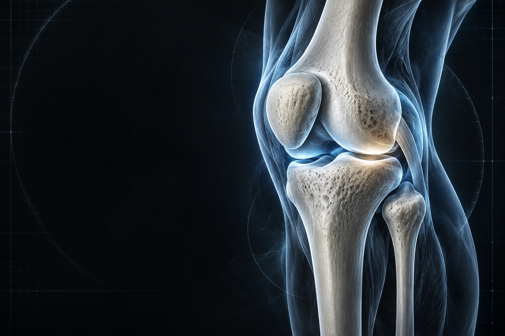

Main, poignet
& coude
Chirurgie de la main, pathologies du poignet et du coude, canal carpien et neuropathies périphériques.
CHIRURGIE ORTHOPÉDIQUE & TRAUMATOLOGIQUE BOBIGNY · 93
Comprendre l’anatomie. Maîtriser le geste. Accompagner chaque parcours avec exigence.

01 NOS EXPERTISES
Le service prend en charge les pathologies orthopédiques et les traumatismes des membres supérieurs et inférieurs.
Chirurgie de la main, pathologies du poignet et du coude, canal carpien et neuropathies périphériques.
Pathologies de l’épaule, dont arthrose et lésions liées aux traumatismes.
Arthrose, ligaments croisés, pathologies du pied et arthrose de cheville.
Fractures, traumatismes et prise en charge des séquelles compliquées.
La stratégie de soins est définie par l’équipe après évaluation médicale de chaque situation.
02 ANATOMIE · TECHNOLOGIE · GESTE
RECHERCHE EN MOUVEMENTÀ Avicenne, l’équipe explore depuis plusieurs années les usages de la réalité mixte en chirurgie orthopédique : visualiser, planifier et partager l’expertise autrement.
Repères historiques du serviceIntervention de l’épaule assistée par une plateforme collaborative de réalité mixte.
24 heures de chirurgie holographique pilotées depuis Avicenne, avec 15 chirurgiens.
Une arthroscopie de l’épaule réalisée avec Apple Vision Pro marque une nouvelle étape.
03 LE SERVICE
Une équipe de chirurgie orthopédique et traumatologique, dirigée par le Pr Thomas Gregory.
Parcours du Pr Thomas Gregory04 CONSULTATIONS & ACCÈS
Hôpital Avicenne · Bâtiment Larrey B
125 rue de Stalingrad, 93000 Bobigny
T1 · arrêt Hôpital Avicenne
M7 · La Courneuve 8 mai 1945 → T1 Noisy-le-Sec
M5 · Bobigny Pablo Picasso → T1 Saint-Denis
RER E · Noisy-le-Sec → T1 Saint-Denis
Accueil 24h/24 et 7j/7 au service des urgences de l’hôpital.